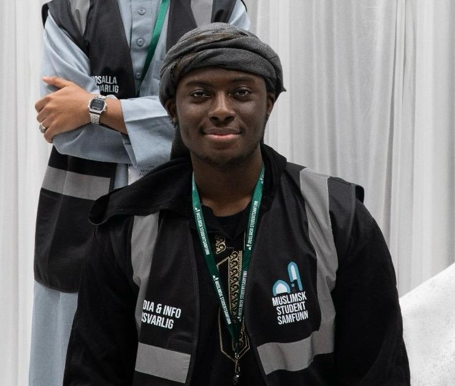

Gründer
Majmio
Majmio samler medlemshåndtering og styrevalg for organisasjon på ett sted — til lav pris, uten å plage deg med funksjoner du ikke trenger.
قَالَ كَلَّا ۖ إِنَّ مَعِيَ رَبِّي سَيَهْدِينِ
Han sa: «Nei, sannelig min Herre er med meg — Han skal veilede meg.»
Surah Ash-Shu'arā · 26:62
Utvalgt prosjekt Nettbutikk — live
En komplett ende-til-ende nettbutikk i React, med betaling og frakt via Vipps, Posten og Mollie APIer. Ikke-tekniske brukere styrer hele driften fra et fullverdig admin-dashbord, med automatisk lagersporing og et innebygd bookingsystem.
Utvalgt prosjekt Plattform — live
Majmio samler medlemshåndtering og styrevalg for organisasjon på ett sted — til lav pris, uten å plage deg med funksjoner du ikke trenger.
Utvalgt prosjekt Forskning — publisert
Førsteforfatter på en artikkel sammen med to professorer og en masterstudent om spillbasert læring i høyere utdanning. Fun fact: Jeg er verifisert på ResearchGate.
Førsteforfatter
Plattform — under arbeid
Taaruf er en plattform laget for å hjelpe muslimer å ha mer meningsfulle og strukturerte samtaler før ekteskapet. I stedet for å lene seg på spredte råd på nettet, guider Taaruf to personer gjennom kuraterte spørsmål om tro, familie, økonomi, kommunikasjon, livsstil og mål. Begge svarer hver for seg, med en betrodd tredjeperson (mahram) inkludert — slik at de forstår hverandre bedre og finner de viktige temaene de bør snakke om før ekteskapet.
Utvalgt prosjekt Hemmelig — under arbeid
Kan ikke dele så mye om denne ennå — noe jeg og teamet gleder oss veldig til å vise verden.
Kommer snart
Gründer
Gründer
Majmio samler medlemshåndtering og styrevalg for organisasjon på ett sted — til lav pris, uten å plage deg med funksjoner du ikke trenger.
Medgründer Under arbeid
Denne er fortsatt hemmelig — knyttet til det hemmelige prosjektet 😉
Kommer snart
Medgründer Under arbeid
MiTek samler norske muslimer innen teknologi for nettverksbygging, faglig utvikling, mentorordninger og samarbeid på tvers av erfaring og bakgrunn.
Kapitler
 2021 — 2025
ShowTime
Som 17-åring startet jeg ShowTimeNorge — Skandinavias
første basketball-mediehus i sitt slag, og det største på
sin tid.
Les historien
2021 — 2025
ShowTime
Som 17-åring startet jeg ShowTimeNorge — Skandinavias
første basketball-mediehus i sitt slag, og det største på
sin tid.
Les historien

2023 — 2026 MSS Alhamdulillah for Muslimsk Studentsamfunn gjennom studietiden min. Frivillig, så styremedlem, så leder i den største og eldste studentforeningen for norske muslimer. Se tidslinjen 2026 — ?
Medina
En ny og annerledes vei. Å forlate tryggheten i søte Norge
for å jage noe dypere og utvikle meg mer — in shaa Allah.
Se siden
2026 — ?
Medina
En ny og annerledes vei. Å forlate tryggheten i søte Norge
for å jage noe dypere og utvikle meg mer — in shaa Allah.
Se siden
Utdanning
Slutt på sending
LinkedIn GitHub Se prosjekter på LinkedIn
Temaene på siden er dedikert til ulike viktige kapitler i livet mitt. IR-temaet er en hilsen til tiden min som frivillig og ansatt hos Islamic Relief ❤